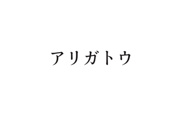
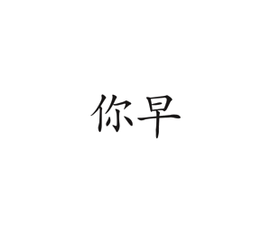
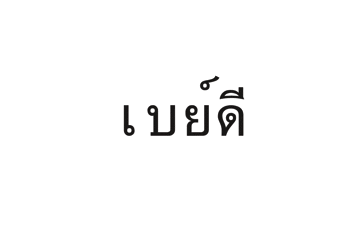

graphic
実習作品「Tlangform」
「繋ぐ」と「地域」をテーマにした作品
2017/1〜2017/2

文字をつなげる、意味がつながる



THERMA
繋ぐと地域について各自で解釈して作品を作った。
文字はある特定された地域のみで使われる地域性の高いものでありそれらの形を段階的につなげていくことによって生まれる面白さを表現した。
DESCRIPTION
外国語から日本語へ変化するパラパラ漫画を製作した。ページ数約100枚illustratorで製作し、実際は画用紙を使いボンドを使う製本方法で自分で製本し、韓国語、タイ語、中国語それぞれ、「ありがとう、さよなら、おはよう」でパラパラ漫画を制作した。
COMMENTARY

私たちは普段ある特定の形をした図形（文字）に意味を恣意的に結びつけている。しかし知らない言語では意味を結びつけることができない。段階的に変化させることによってどこから意味を繋げるのか、意味を知る前と知った後では同じ形でも感じ方が変わる